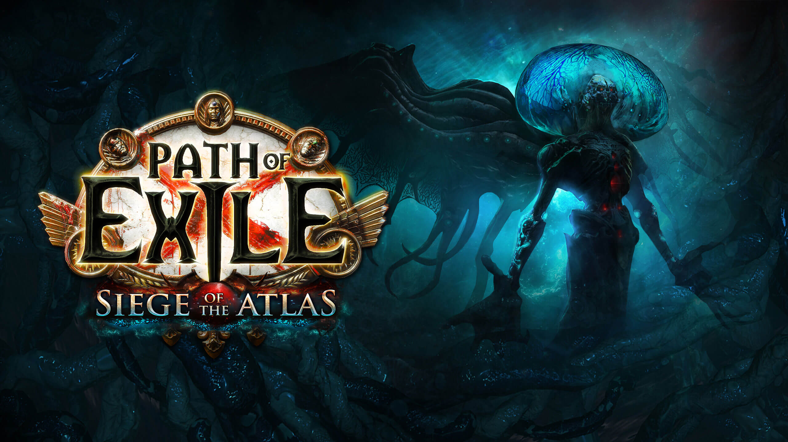

Valorant
postado em 26/02/2022
Valorant é um jogo eletrônico multijogador gratuito para jogar de tiro em primeira pessoa desenvolvido e publicado pela Riot Games. É o primeiro jogo do gênero desenvolvido pela empresa,sendo anunciado pela primeira vez com o codinome Project A em outubro de 2019, em um evento de comemoração de 10 anos de League of Legends. Foi lançado em 2 de junho de 2020 para Microsoft Windows. Duas equipes de cinco jogam uma contra a outra, e os jogadores assumem o papel de "agentes" com habilidades únicas. No modo de jogo principal, a equipe atacante tem uma bomba, chamada Spike, que eles precisam plantar em um local. Se a equipe atacante proteger com sucesso a bomba e ela detonar, eles ganharão um ponto. Se a equipe defensora desarmar com sucesso a bomba ou o cronômetro de 100 segundos da rodada expirar, a equipe defensora receberá um ponto. Eliminar todos os membros da equipe adversária também ganha uma rodada. A primeira equipe a vencer o melhor de 24 rodadas vence a partida. O jogo também promove um servidor com tick rate de 128, que garante uma jogabilidade suave e baixo ping com uma expansão global de datacenters.
Leia MaisPath of Exile
postado em 27/02/2022 Path of Exile é um jogo de RPG de ação online gratuito desenvolvido e publicado pela Grinding Gear Games. Após uma fase beta aberta, o jogo foi lançado para Microsoft Windows em outubro de 2013. Uma versão para o Xbox One foi lançada em agosto de 2017, e uma versão para PlayStation 4 foi lançada em março de 2019
Leia MaisPostagens Recentes
Valorant é um jogo eletrônico multijogador gratuito para jogar de tiro em primeira pessoa desenvolvido e publicado pela Riot Games.
Leia MaisPath of Exile é um jogo de RPG de ação online gratuito desenvolvido e publicado pela Grinding Gear Games.
Leia Mais